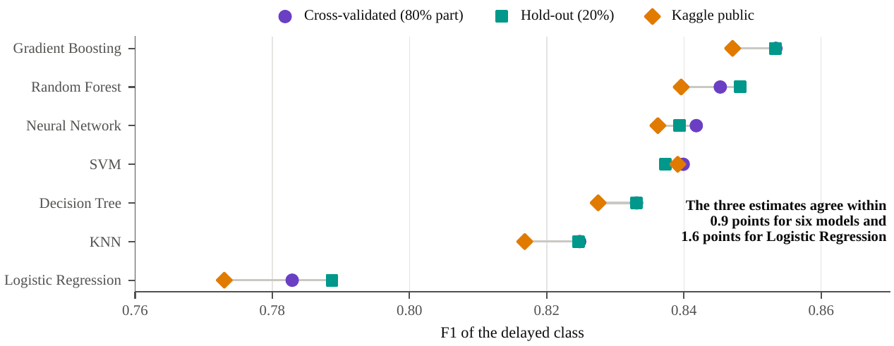
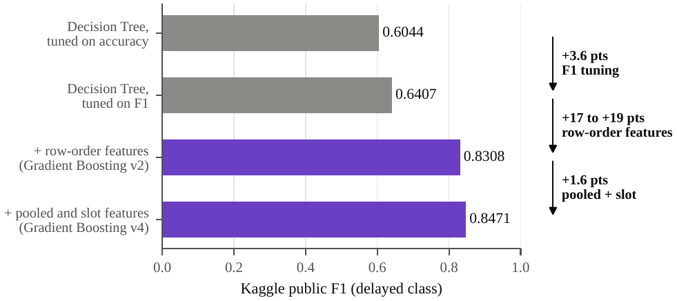
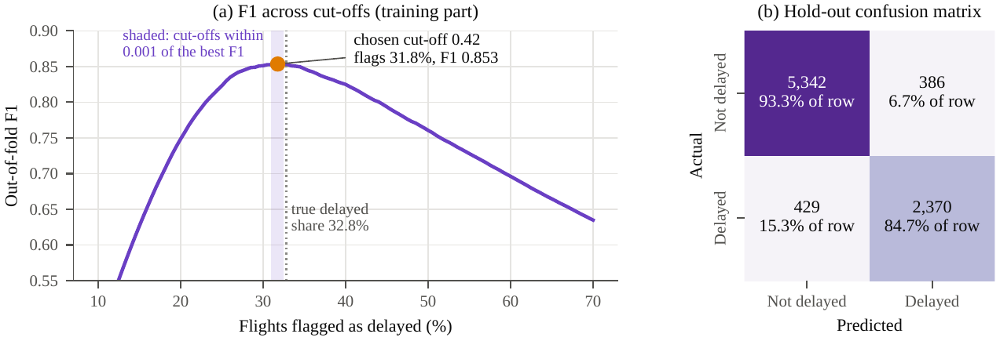
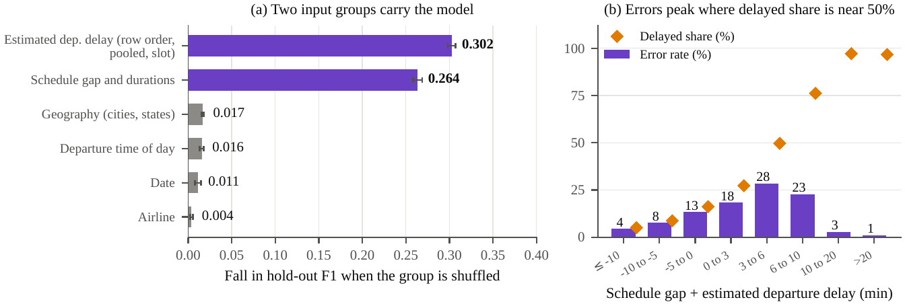

Seven models, compared fairly
Features mattered far more than algorithms.
Gradient Boosting came out on top, but the more interesting result is how little the choice of algorithm mattered once the key features existed.
The seven models
Five methods were required (Decision Tree, KNN, Random Forest, SVM, Neural Network). I added Gradient Boosting and Logistic Regression. All come from scikit-learn, and each was tuned by randomised search with cross-validation on the training part only.
| Model | Idea | Chosen settings |
|---|---|---|
| Decision Tree | Splits recursively on thresholds, giving readable rules. | Depth 8, at most 60 leaves |
| KNN | Majority vote among the nearest training flights. | k = 75, distance weights, Manhattan distance |
| Random Forest | Averages many trees grown on bootstrap samples. | 400 trees, no depth limit |
| SVM (RBF) | Maximum-margin boundary in a kernel space. | C = 1, gamma = 0.03, balanced weights |
| Neural Network | Multilayer perceptron with early stopping. | Two hidden layers (64, 32), L2 penalty |
| Gradient Boosting | Adds small trees one at a time, each fixing the errors so far. | Learning rate 0.05, 31 leaves per tree |
| Logistic Regression | Linear baseline that shows how much non-linearity there is. | C = 0.1, balanced weights |
Results
F1 of the delayed class. Cross-validation and hold-out use an 80/20 split of the labelled file. Kaggle is the public leaderboard score on the unlabelled file. Models were chosen on cross-validation and hold-out results, and the Kaggle score was consulted afterwards.
| Model | Cross-val F1 | Hold-out F1 | Kaggle F1 |
|---|---|---|---|
| Gradient Boosting | 0.853 | 0.853 | 0.8471 |
| Random Forest | 0.845 | 0.848 | 0.8396 |
| SVM (RBF) | 0.840 | 0.837 | 0.8391 |
| Neural Network | 0.842 | 0.839 | 0.8362 |
| Decision Tree | 0.833 | 0.833 | 0.8275 |
| KNN | 0.825 | 0.825 | 0.8168 |
| Logistic Regression | 0.783 | 0.789 | 0.7730 |

Neighbouring models are separated by 0.3 to 0.8 points, which is within sampling error, so the ordering of the middle group should not be over-read. Gradient Boosting’s lead of 1.4 to 2.8 points over the SVM, Neural Network, Decision Tree and KNN is more reliable.
What actually moved the score
Tuning for F1 added 3.6 points on Kaggle. The row-order features then added a further 17 to 19 points. A wider search and ensembling together changed results by 0.5 points or less.

| Model | Base | + Row order | + Pooled | + Slot |
|---|---|---|---|---|
| Gradient Boosting | 0.660 | 0.838 | 0.848 | 0.853 |
| Random Forest | 0.661 | 0.834 | 0.848 | 0.848 |
| Neural Network | 0.657 | 0.821 | 0.839 | 0.838 |
| SVM (RBF) | 0.653 | 0.823 | 0.837 | 0.837 |
| Decision Tree | 0.640 | 0.816 | 0.832 | 0.833 |
| KNN | 0.645 | 0.811 | 0.823 | 0.825 |
| Logistic Regression | 0.634 | 0.770 | 0.789 | 0.787 |
The slot group helped only Gradient Boosting, KNN and the Decision Tree, and by small amounts, so I treat its benefit as unproven. The other four final models use the pooled set.
A closer look at Gradient Boosting
On the hold-out of 8,527 flights, the model reaches precision 0.860, recall 0.847, F1 0.853, accuracy 0.904 and AUC 0.962. It found 2,370 delayed flights, missed 429, and wrongly flagged 386 on-time flights.

| Cut-off | Flagged (%) | Precision | Recall | F1 |
|---|---|---|---|---|
| 0.25 | 37.1 | 0.789 | 0.892 | 0.837 |
| 0.30 | 35.2 | 0.817 | 0.877 | 0.846 |
| 0.42 | 31.8 | 0.868 | 0.840 | 0.853 |
| 0.55 | 29.1 | 0.904 | 0.800 | 0.849 |
| 0.70 | 25.9 | 0.945 | 0.746 | 0.834 |
F1 weights precision and recall equally, so the best cut-off is a compromise. An operator who values catching delays over avoiding false alarms would choose a lower cut-off, and one who acts on each flag at a cost would choose a higher one.
Which inputs the model relies on
Shuffling the columns that carry the row-order and pooled information lowers hold-out F1 by 0.302, and shuffling the schedule gap and duration columns lowers it by 0.264. Departure time, geography, date and airline matter little. The model rests almost entirely on the two signals from The Finding.
